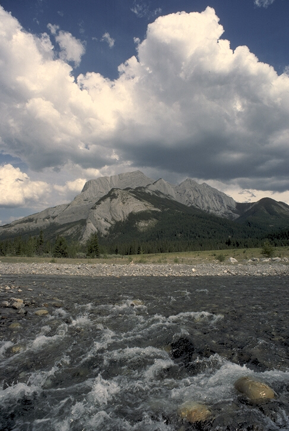
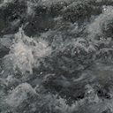
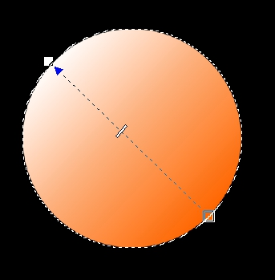
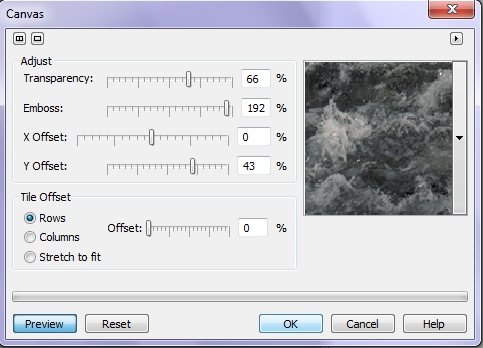
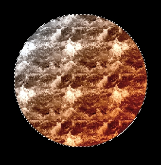
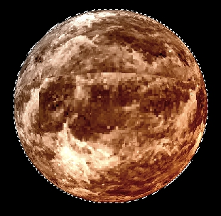
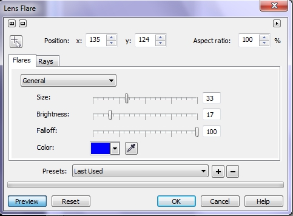
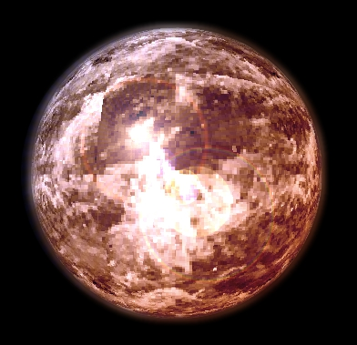

Создание абстрактного шарика в Photo-Paint Х5
В этом примере, я хочу рассказать о применении различных фильтров в Photo-Paint Х5 для создания стеклянного шарика. Основная идея конечно не в самом шарике, шарики можно делать разными способами, а в использовании различных инструментов в Photo-Paint Х5 для получения различных эффектов.
1. Сначала необходимо провести некоторую подготовительную работу. Для создания шарика, я помимо прочих инструментов, буду использовать фильтр Canvas (Холст). Заготовок имеющихся в распоряжении Photo-Paint явно не достаточно для выполнения разных задач. Поэтому сначала и займемся выбором заготовки. Заготовкой может послужить любое изображение. Но брать целое изображение в качестве заготовки, не лучшая идея. Нам понадобится только лишь его часть. За основу взято изображение, показанное на рис. 1.
Исходное изображение имеет размер 487х726 px и разрешение 72 dpi. Хотя это не имеет решающего значения.

2. Наша задача выбрать подходящий участок для заготовки фильтра Canvas (Холст). Нам подойдет самый бурный участок реки. Выбрав участок, с помощью инструмента Crop (Обрезка) обрезаем изображение (рис. 2). Теперь сохраните обрезанную часть в виде файла. Назовем его Рисунок 1.

3. Теперь начинаем создавать шарик. Выполните команду File > New (Файл > Создать). Я выбрал размер нового изображения 130х130 мм, разрешение 96 dpi. Фон черный. Но эти настройки не имеют принципиального значения, разве что цвет фона лучше все же выбрать черным.
4. Нажимаем клавишу J, чтобы активизировать инструмент Ellipse Mask (Эллиптическая маска). Начинаем создавать круглую маску, для чего при ее создании удерживаем нажатой клавишу Ctrl. Размер маски произвольный, на свой вкус, но лучше сделать побольше.
5. Теперь применим заливку. Нажимаем клавишу G, чтобы вызвать инструмент Interactive Fill (Интерактивная заливка). В качестве первого цвета выбираем оранжевый в качестве конечного – белый (рис. 3). Тип заливки – Linear (Линейная).

6. Теперь применим к нашей окружности фильтр Canvas (Холст). Выполните команду Effects > Texture > Canvas (Эффекты > Текстура > Холст). В диалоговом окне Canvas (Холст) раскройте список заготовок и нажмите кнопку Other (Другой), чтобы загрузить новую заготовку. В открывшемся диалоговом окне, укажите сохраненный на шаге 1 файл, «Рисунок 1». В диалоговом окне Canvas (Холст) установите значения параметров, как на рис. 4 и нажмите ОК.

В результате получится такой круг, как на рис. 5.

7. Дважды примените фильтр Sphere (Сфера) с значением параметра Percentage (Процент) = 24. Значение этого параметра может отличаться от моего, в зависимости от размера круга. Получится шар, как на рис. 6.

8. Теперь нам нужно смягчить края шарика. Выполните команду Mask > Mask Outline > Border (Маска > Абрис маски > Граница). В диалоговом окне Border (Рамка) установите значение Width (Ширина) = 8, а в раскрывающемся списке Edges (Края) выберите вариант Soft. Затем примените фильтр Gaussian Blur (Размытость по Гауссу) с значением Radius (Радиус) = 10.
9. Удалите маску, нажав Ctrl + R.
10. Теперь снова создайте маску, обведя шарик с помощью инструмента Ellipse Mask (Эллиптическая маска).
11. Примените фильтр Lens Flare (Блик объектива). Я выбрал синий цвет бликов. Настройки в окне фильтра показаны на рис. 7.

12. Удалите маску.
Окончательный вид шарика показан на рис. 8.


Спасибо за урок! Ждем новых уроков.
А вот урок который мне очень помогает в коррекции кожи человека: http://www.alfredky.com/tutorials/skintutorial.pdf
Спасибо за урок! Ждем новых уроков по СРР.
А вот урок, который очень помогает мне в коррекции кожи человека: Skin Smoothing Tutorial